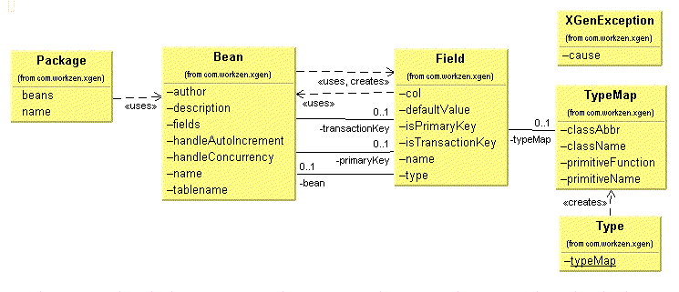

This table shows how Xgen types map to java types. The W3C schema types, and some common SQL types are included for comparison.
| Xgen Type | Xgen Java Type | W3C XML Schema Types | Common Sql Types |
| boolean | java.lang.Boolean | boolean | BIT, BOOLEAN |
| byte | java.lang.Byte | byte | TINYINT |
| short | java.lang.Short | short | SMALLINT |
| integer | java.lang.Integer | integer | INT, INTEGER |
| long | java.lang.Long | long | BIGINT,LONGINT |
| float | java.lang.Float | float | REAL |
| double | java.lang.Double | double | FLOAT, DOUBLE |
| decimal | java.math.BigDecimal | decimal | DECIMAL, NUMERIC |
| string | java.lang.String | string | VARCHAR, LONGVARCHAR, TEXT, CHAR |
| date | java.util.Date | date | DATE |
| time | java.util.Date | time | TIME |
| timestamp | java.util.Date | timeInstant | TIMESTAMP |
| clob | char[] | CLOB, LONGVARCHAR | |
| blob | byte[] | BLOB, BINARY, VARBINARY, LONGBINARY, (IMAGE) |
<package name="com.workzen.xgen.test" >
<bean name="TypeBean"
tablename="xgen_types"
handleConcurrency="true"
handleAutoIncrement="true"
author="bmatlack@workzen.userworld.com"
description="Demonstration class of all types except blob and
clob" >
<field name="pKey"
col="pkey"
type="Long"
default="0"
pkey="true"/>
<field name="booleanType"
col="boolean_type" type="Boolean"
default="false" />
<field name="byteType"
col="byte_type" type="Byte"
default="0" />
<field name="charType"
col="char_type" type="String"
default="Y" />
<field name="shortType"
col="short_type" type="Short"
default="0" />
<field name="intType"
col="int_type" type="Integer"
default="0" />
<field name="longType"
col="long_type" type="Long"
default="0" />
<field name="floatType"
col="float_type" type="Float"
default="0"/>
<field name="doubleType"
col="double_type" type="Double"
default="0"/>
<field name="decimalType"
col="decimal_type" type="Decimal"
default="0"/>
<field name="stringType"
col="string_type" type="String"
default="xxx" />
<field name="textType"
col="text_type" type="String"
default="longer text"/>
<field name="dateType"
col="date_type" type="Date"
default="2000-12-31" />
<field name="timeType"
col="time_type" type="Time"
default="01:01:01" />
<field name="timestampType"
col="timestamp_type" type="Timestamp"
default="2001-01-01 00:00:01" />
<field name="tcn"
col="tcn"
type="Integer" default="0"
tkey="true"/>
</bean>
</package>
bean tablename
The name of the corresponding sql table
bean handleAutoIncrement=true
The bean will automatically incrementing the primary key using "select max from primary_key" when the the primary key is a numeric field.
bean handleConcurrency=true
The bean will handle concurrency for a record by comparing the "transcation control number" in the table with the tcn in the bean. If they are not the same, than the record has changed since the bean was loaded. Obviously there is some latency between the tcn check and the final update of the record, so this method will not provide true concurrency. The solution is to move the check into the database in the form of a stored procedure, and a trigger. For a full discussion of this method, please read the paper "Optimistic Locking with Concurrency in Oracle" by Graham Thornton.
field name
The name of the attribute
field col
The name of the corresponding table column
field type
The types are case-insensitive and follow the xgen type listed above.
field default
You can specify defaults for strings and dates. Currently, all numeric fields are initialized to 0. The code generator uses string constructors for object types, which in turn require a value to initialize.
field pkey=true
Identifies the field as a primary key
field tkey=true
Identifies the field as a transaction control field
There is a junit test class provided that does CRUD create, insert, update and delete tests on your database. To run the test, create the table in the database, ( there are sql scripts in the sql directory ), supply the correct driver path and connection strings in db.properties in the ant directory, and run ant run-program. All of the tests use autoIncrement=true, which means the bean makes an extra call to the database to "select max from primary_key".
One of the unit tests is a performance test where 1000 records are loaded, modified and persisted back to the database. Below are the results of the tests.
| RDBMS | Version | OS | Processor | Memory | Performance without concurrency | Performance with concurrency | Driver | Transactions | Blobs | Clobs |
|---|---|---|---|---|---|---|---|---|---|---|
| MySql | 3.23.28 | Linux | 200 MHZ P2Pro | 128 MB | 10-12 sec | 16-17 sec | mm.mysql-2.0.4-bin.jar | ISAM table types dont support rollbacks | Driver Bug | Not supported |
| MySql | 4.0 | Win2000 | 800 MHZ AMD | 500 MB | 4-5 sec | mm.mysql-2.0.8-bin.jar | No problems | No problems | Not supported | |
| Oracle | 8.16 | Linux | 200 MHZ P2Pro | 128 MB | 25-30 sec | 38 -40 sec | classes12.jar | No problems * | No problems | No problems |
| Oracle | 8.16 | Win2000 | 800 MHZ AMD | 500 MB | 9-10 sec | classes12.jar | No problems * | No problems | No problems | |
| Postgres | 7.0.2 | Linux | 220 MHZ P2Pro | 128 MB | 50-60 sec | jdbc7.1-1.2.jar | Transaction isolation level 1 not supported. Delete problem... | Not supported | Not Supported | |
| MS SqlServer | 6.5 | Windows NT 4.0 SP6 | 220 MHZ P2Pro | 128 MB | 15-20 sec | 58 -68 sec | sprinta2000.jar | No problems | No problems | No problems |
| Cloudscape | 4.0 | Win2000 | 800 MHZ AMD | 500 MB | 30-35 sec | cloudscape.jar | No problems | No problems | No problems | |
| DB2 | 6.0 | Win2000 | 800 MHZ AMD | 500 MB | 7-8 sec | db2java.jar | No problems |
* Oracle does not allow empty string inserts through the JDBC driver. Make sure all values are initialized with default values before an insert or update.
